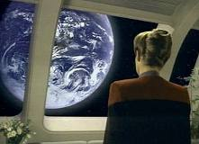
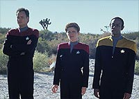
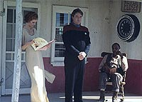
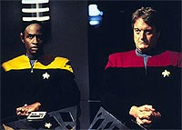
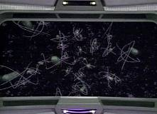

|
MANCHETE
DO EPISÓDIO
Episódio com forte teor filosófico traz
de volta o sabor do Q Continuum
Episódio
anterior | Próximo
episódio
Sinopse:
Data Estelar: 49301.2.
 Durante
tentativa de coletar uma amostra de cometa, a Voyager acaba
trasportando a bordo um membro do Q Continuum que estava aprisionado
dentro do astro. O ser expressa sua gratidão pelo
"resgate" e diz adeus à tripulação. Mas, na tentativa
de desaparecer, acaba fazendo todos os homens da nave sumirem.
Quando a capitã Janeway exige o retorno de seus oficiais, o velho
conhecido Q, que tantas vezes atormentou Picard e a Enterprise,
aparece a bordo. Durante
tentativa de coletar uma amostra de cometa, a Voyager acaba
trasportando a bordo um membro do Q Continuum que estava aprisionado
dentro do astro. O ser expressa sua gratidão pelo
"resgate" e diz adeus à tripulação. Mas, na tentativa
de desaparecer, acaba fazendo todos os homens da nave sumirem.
Quando a capitã Janeway exige o retorno de seus oficiais, o velho
conhecido Q, que tantas vezes atormentou Picard e a Enterprise,
aparece a bordo.
Q diz à capitã que o outro Q, que escapou de seu confinamento no
cometa, havia sido trancado por 300 anos devido a sucessivas
tentativas de cometer o suicídio. O "Q-suicida" pede
asilo e arrisca a  vida
da tripulação da Voyager ao lançar a nave por todos os cantos e
eras do Universo, tentando se esconder do outro Q. Irritada com o
jogo de "cabo de guerra" entre os seres onipotentes,
Janeway concorda em conceder uma audiência para considerar o pedido
de asilo. Os termos são logo impostos: se a capitã decidir em
favor do Continuum, o prisioneiro deverá retornar ao confinamento,
mas, se a decisão favorecer Q2, deverá lhe ser concedida a
mortalidade para que possa realizar seu desejo de morte. vida
da tripulação da Voyager ao lançar a nave por todos os cantos e
eras do Universo, tentando se esconder do outro Q. Irritada com o
jogo de "cabo de guerra" entre os seres onipotentes,
Janeway concorda em conceder uma audiência para considerar o pedido
de asilo. Os termos são logo impostos: se a capitã decidir em
favor do Continuum, o prisioneiro deverá retornar ao confinamento,
mas, se a decisão favorecer Q2, deverá lhe ser concedida a
mortalidade para que possa realizar seu desejo de morte.
O Q rebelde pede a Tuvok que o represente na audiência, onde
explica que quer pôr fim à sua entediante imortalidade. Q retruca
dizendo que o suicídio poderia implicar consequências imprevisíveis
para o Continuum, que nunca conheceu nada a não ser a vida eterna.
Um momento de drama acontece na sala, quando Q chama a si mesmo para
testemunhar na presença de outras pessoas que tiveram suas vidas
profundamente afetadas pelos Q, entre elas William Riker, da USS
Enterprise.
 Q
tenta influenciar a decisão final de Janeway prometendo levar a
Voyager de volta para a Terra. Porém, determinados a apresentar um
veredito justo, Janeway, Tuvok e o Q-suicida levam a audiência para
uma manifestação simbólica do Continuum, o local onde os seres
onipotentes vivem. A idéia era mostrar como é a vida dos membros
da dimensão em seu próprio domínio. Mais tarde, a capitã anuncia
que revelará sua decisão no dia seguinte. Pela manhã, ela concede
a Q2 o pedido de asilo e insiste que ele explore os mistérios da
vida mortal e que considere as consequências antes de tomar
qualquer atitude drástica. No entanto, em poucas horas, o
"humano" Q, agora chamado Quinn pela tripulação, comete
o suicídio ao tomar um raro veneno que Q confessa ter fornecido ao
amigo.
Comentários:
"Death
Wish" não é um episódio convencional de Voyager,
pelo fato de fazer forte referência a outra série de Jornada
e por resgatar dela um personagem recorrente. Mas talvez seja esse o
motivo pelo qual tivemos uma das melhores e mais profundas histórias
da segunda temporada --a continuidade inerente ao enredo, somada aos
fatores morais implicados no roteiro. A crise existencial dos Q já
é tocada de forma mais ou menos sutil desde "Hide
and Q", da primeira temporada de A Nova Geração,
mas só agora temos um insight completo sobre o que aquele episódio
significava.
 Durante
A Nova Geração, Q fez diversas aparições e, apesar de sua
personalidade egocêntrica e sarcástica, sempre passou uma lição
para os seres humanos (ele foi o responsável pela introdução dos
Borgs à Federação, para citar o exemplo mais contundente).
Porém, nesse caso não é a humanidade que está sendo julgada por
seus valores, mas os membros do Q Continuum. As grandes questões são
abordadas: Seria a imortalidade uma dádiva desses seres tão
poderosos? A vida eterna deveria ser imposta a indivíduos que já
absorveram uma infinidade de conhecimentos? Como uma sociedade
supostamente tão evoluída pode defender os princípios do Estado a
ponto de ignorar os direitos individuais?
 A
oportunidade foi perfeita para uma história com forte conteúdo
moral e um insight inédito sobre a natureza do Q Continuum. A
expressão metafórica desse mundo por meio daquele posto de beira
de estrada em que o tempo não existe (os relógios não têm
ponteiros), os jogos envolvem mundos inteiros e o silêncio reina
(porque não há mais nada a ser dito) é brilhante --justamente
porque é complicado imaginar uma dimensão alienígena de criaturas
onipotentes em termos tão humanos. É surpreendente, e, enquanto
metáfora, extremamente eficiente.
No episódio como um todo, houve um excelente equilíbrio entre
situações dramáticas e o bem afamado humor de Q (John de Lancie).
O ator, que interpreta esse personagem há 14 anos, é velho amigo
de Kate Mulgrew (Janeway), por isso pode-se imaginar o quanto os
dois se divertiram nos sets de filmagem. Aliás, embora Tuvok tenha
tido uma boa participação, o roteiro é mesmo centrado no trio
capitã e "Qs". Houve fortes momentos com cada um deles.
 Outra
coisa singular foi a participação especial de Jonathan Frakes (Will
Riker, de A Nova Geração). Apesar de sua estadia ter sido
curta, deu para resgatar seu complicado relacionamento com Q, embora
ele pudesse ter sido melhor aproveitado (justamente com base na história
de "Hide
and Q") do que foi, ao fazer o papel do descendente do
combatente da guerra civil americana. Junto a Riker, estavam Isaac
Newton --com fraquíssima presença-- e Mauri Ginsberg (interpretado
por ele próprio).
Janeway marcou com força o episódio. O "suborno" de Q
foi quebrado pela ética e moral da capitã, que graciosamente também
tomou uma decisão sábia ao final da história. Foi um dos grandes
momentos da capitã na série. Pudemos conhecê-la em toda a sua
humanidade. A visão que predominou é a de uma mulher emocional, e
não a daquela capitã responsável unicamente destinada a trazer
seus colegas para casa.
 A
problemática enfrentada pela capitã é, em última análise,
decidir quem deve ter a autoridade final sobre o destino dos indivíduos,
eles próprios ou o Estado. A questão pode parecer trivial, mas é
complexa. Como parte de um sociedade, um indivíduo tem obrigações
a cumprir para manter o "todo" funcionando. Ao mesmo
tempo, na condição de ser único e individual, cada um tem certos
direitos. A linha entre direitos e deveres é que precisa ser
estabelecida. Neste caso, Janeway decidiu em favor do indivíduo.
Mas não pense que todos adotariam a mesma decisão. No Brasil, por
exemplo, suicídio é considerado crime, e sua punição é prevista
em lei, por mais insensato que isso possa parecer.
Sobre Q, ele continua quase o mesmo ao longo dos anos, com o
sarcasmo e a personalidade de sempre. Mas, ao final, ele sai com um
bônus: há um crescimento em sua personalidade, motivado pelo
sacrifício do Q-suicida, que o inspira a também se rebelar contra
o status quo no Continuum. Para completar, fica a promessa de um
retorno (ele volta em "The Q and The Grey", do
terceiro ano, com as repercussões dessa história).
É um "roteiro-cabeça" que, quando terminamos de
assistir, ficamos um tempo refletindo. É também um resgate da
concepção original de Gene Roddenberry sobre Jornada: o
enfoque nas grandes questões filosóficas e a crítica a costumes
da sociedade. Um vencedor.
Citações:
Q - "I guess that's what
we get for having a woman in the captain's seat."
("É isso que dá ter uma mulher na cadeira de capitão.")
Q - "Did anyone ever tell you are angry when you are
beautiful?"
("Alguém já lhe disse que fica muito linda quando está
zangada?")
Tuvok - "I am curious. Have the Q always had an absence os
manners, or is this the result of a natural evolutionary process
that comes with omnipotence?"
("Estou curioso. Os Q sempre foram assim mal-educados, ou isso
é um processo evolucionário natural que vem com a onipotência?")
Janeway - "Thank you; and please don't call me madam captain."
("Obrigada; e por favor não me chame de senhora capitã.")
Riker - "Q! What the hell is going on?"
("Q! Que diabos está acontecendo?")
Trivia:
 O episódio marca a primeira aparição de Q em Voyager. O
personagem voltaria ao seriado em duas outras ocasiões, em "The
Q and the Grey" (terceira temporada) e em "Q2"
(sétima temporada).
O episódio marca a primeira aparição de Q em Voyager. O
personagem voltaria ao seriado em duas outras ocasiões, em "The
Q and the Grey" (terceira temporada) e em "Q2"
(sétima temporada).
O episódio marca a segunda aparição de um personagem de A Nova
Geração em Voyager, e a primeira de um personagem
regular, o comandante William Riker. O primeiro a fazer a transição
foi Reginald Barclay, em "Projections",
do início do segundo ano. Mais tarde, Geordi La Forge faria uma
participação (em "Timeless", do quinto ano) e
Deanna Troi e Barclay se tornariam personagens recorrentes da série
nas últimas duas temporadas.
O episódio, nos bastidores, mostra uma dupla interessante em ação:
Michael e Shawn Piller, pai e filho. Após sair de Jornada,
Michael Piller abriria com seu filho uma produtora própria, chamada
"Piller Squared". Aqui, Shawn foi responsável pela história,
e Michael roteirizou.
O diretor James Conway tem uma velha história com Jornada nas
Estrelas, mas seu trabalho mais importante é bem recente: ele
está dando o pontapé inicial na série Enterprise, ao
dirigir o episódio-piloto, "Broken Bow".
O ator Gerrit Graham não fez sua estréia no franchise neste episódio,
ao atuar como o Q rebelde. Antes ele havia interpretado "o caçador",
no episódio "Captive
Pursuit", de Deep Space Nine.
Ficha
técnica:
História de Shawn Piller
Roteiro de Michael Piller
Direção de James L. Conway
Exibido em 19/02/1996
Produção: 030
Elenco:
Kate Mulgrew como
Kathryn Janeway
Robert Beltran como Chakotay
Roxann Biggs-Dawson como B'Elanna Torres
Robert Duncan McNeill como Tom Paris
Jennifer Lien como Kes
Ethan Phillips como Neelix
Robert Picardo como Doutor
Tim Russ como Tuvok
Garrett Wang como Harry Kim
Elenco convidado:
John de Lancie como Q
Gerrit Graham como Q rebelde
Peter Dennis como Isaac Newton
Maury Ginsberg como Maury Ginsberg
Jonathan Frakes como William Thomas Riker
Episódio
anterior | Próximo
episódio
|